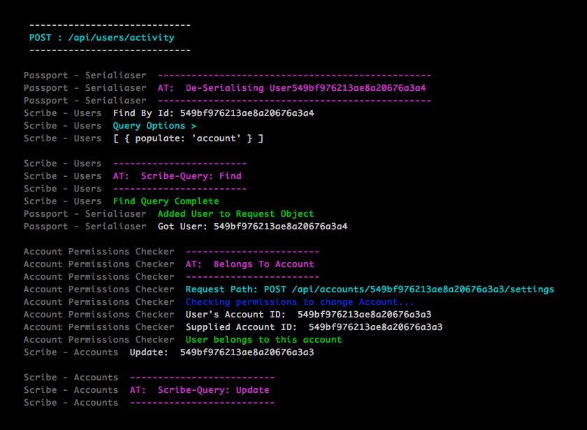

Qwilr Logger
Simple logging utility for Node.js
Simple logging utility for Node.js
Qwilr Logger helps create "narrative" logs for asynchronous environments like Node.js. Narrative logs are those which make it easier to trace the execution path of our code. We use it every day at https://qwilr.com
$ npm install qwilr-logger --save
// Require Qwilr Logger
var qwilrLogger = require("qwilr-logger");
// Instantiate a new logger, with the name 'someLogName'
var log = qwilrLogger("someLogName");
// Log Some Messages
log("Log something");
log.at("Main Controller");
// Note you can attach a custom error handler function
// i.e. Send errors to an error aggregation service.
var crazyError = true;
if (crazyError){
log.error("Just had a crazy error");
};
Qwilr Logger's are named because its useful to know where a particular log message originated from in the source code. Names are assigned when instantiating the logger.
var loggerOne = qwilrLogger("Logger One");
var loggerTwo = qwilrLogger("Logger Two");
var loggerThree = qwilrLogger("Logger Three");
loggerOne("Print this");
loggerTwo("Print that");
loggerOne.note("Note this");
loggerTwo.warn("Warn that");
loggerThree.success("This worked");
Outputs with:

Besides the standard log.error() log.warn(), when tracing the execution path of code, it can be instructive to log code markers i.e. being "at" a particular location in the codebase, or when a function is "doing" something etc.
Qwilr Logger includes the following logging functions:
log.at()
used to describe when code is at the entry point of a module or controller function.
log.at("Login Controller");
log.doing()
marks the beginning of an asynchronous block of code.
log.doing("Requesting JSON");
someLongAsyncRequest().then(result, function() .... )
log.note()
log a note about the code execution path.
log.note("User password matched - good credentials");
log.success()
marks the success of some block of code.
doSomeDatabaseAction().then( function(err, result){
if (result){
log.success("Saved record to database");
}
});
log.warn()
marks a handled error - i.e. an error case that is handled, and non-critical
log.warn("Sign up form got bad inputs - sending error data back to user");
log.error()
marks a serious error - something that signals a mistake in the code itself.
log.error("Looks like the datacenter just blew up?");
(The MIT License)
Copyright (c) 2014 Dylan Baskind
Permission is hereby granted, free of charge, to any person obtaining a copy of this software and associated documentation files (the 'Software'), to deal in the Software without restriction, including without limitation the rights to use, copy, modify, merge, publish, distribute, sublicense, and/or sell copies of the Software, and to permit persons to whom the Software is furnished to do so, subject to the following conditions:
The above copyright notice and this permission notice shall be included in all copies or substantial portions of the Software.
THE SOFTWARE IS PROVIDED 'AS IS', WITHOUT WARRANTY OF ANY KIND, EXPRESS OR IMPLIED, INCLUDING BUT NOT LIMITED TO THE WARRANTIES OF MERCHANTABILITY, FITNESS FOR A PARTICULAR PURPOSE AND NONINFRINGEMENT. IN NO EVENT SHALL THE AUTHORS OR COPYRIGHT HOLDERS BE LIABLE FOR ANY CLAIM, DAMAGES OR OTHER LIABILITY, WHETHER IN AN ACTION OF CONTRACT, TORT OR OTHERWISE, ARISING FROM, OUT OF OR IN CONNECTION WITH THE SOFTWARE OR THE USE OR OTHER DEALINGS IN THE SOFTWARE.